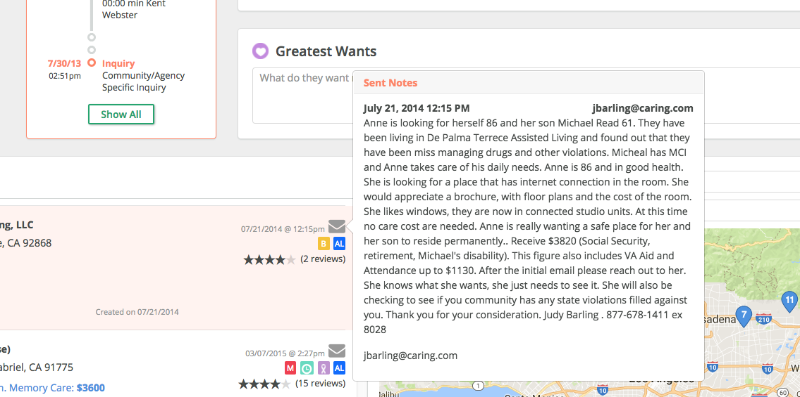
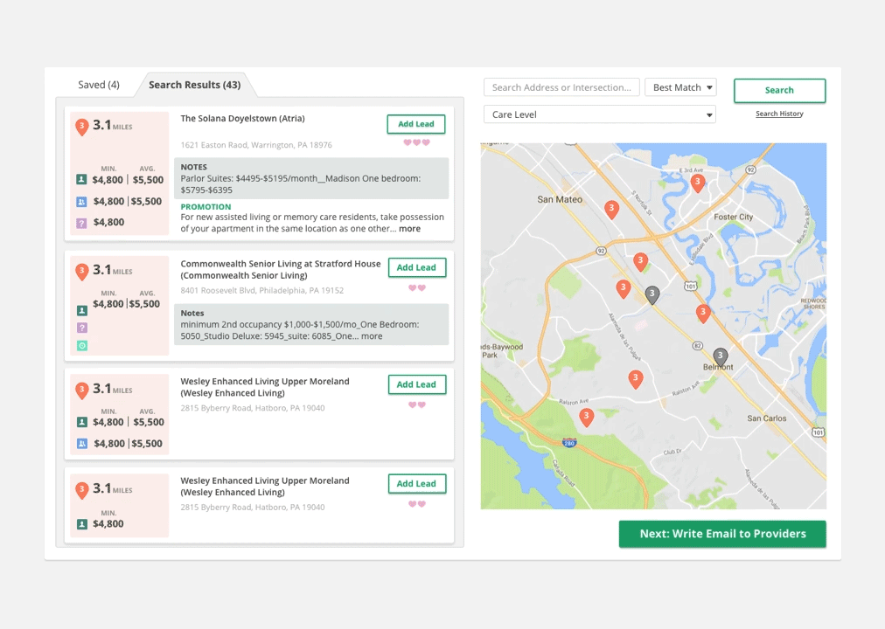

04 CONTACT
Say Hello
Have a cool project? Want to get in contact or just want to say hello? Drop me a line.
Talk is a complex tool that is used by our sales team to assist customers, compile information, and generate sales.

Talk was a tough project to tackle, mainly because as it existed, it was already pretty good. Talk is also our main source of revenue and possibly our most important product. Lots of pressure, amiright?

The business had identified the sending of low quality leads and call inefficiency as the main problems. The solutions they architected were better lead ordering and a faster search algorithm. My job was to design how these would be implemented into the product. I sat through several sales calls and watched our sales team use Talk, then had one on one conversations with those users to compare my notes with their actual thought process. Despite their generally positive view of Talk, they would often run into roadblocks in the tool but find creative ways of working around them. For example, we show them previous emails that are sent when they hover over the email icon - but because you can’t actually interact with the text in the hover pop up they use internal notes to keep a record of emails sent instead. It seemed that call inefficiency wasn’t rooted so much in a slow search, but a better UI.
This is what Talk looked like before I joined:

Users couldn’t find the form field they needed fast enough while on a call and would often type information into a word doc and then go back after the call to enter that information into the form fields. I suggested we use category cards to better define where form fields should live and how they should be grouped. When grouping didn’t give significant enough results, I explored other options. I ended up creating well-defined sections that reduced cognitive load, and a more narrow layout that was easier to digest and scroll through. Small visual details like label proximity to form field, line height and white space, and color coded icons also improved the readability of the page.
A complaint we got a lot was that “Talk is too slow.” Making it faster would take a lot of engineering points so I tried to figure out exactly why users thought that way and if there was a simple solution. Through Mouseflow, I found that “rage clicking” occurred whenever there was an error message or when users searched or added a lead. How could these interactions be designed so that they pacified the user?
I played with different error messaging and realized that the placement of the message was key. As long as it was close to where the error was occuring, the user seemed satisfied with the interaction.
Most users would have to do several searches for different care levels which was what made the process take so long. If the user could limit their search to once or twice, it seemed much quicker without having to actually make the search engine work faster. The solution to this was a simple multi select feature in the search box.
Adding leads was an opportunity for us to delight the user. We added a fun animation each time the user clicked the “add lead” button and changed the words from “add lead” to “adding”. This feedback reassured the user the action had been received even if it took a little longer to execute, and the animation acted as a reward for the wait.
This was the first product I touched that had clear constraints and many many of them. It was extremely complicated with layers of information and a lot of key stakeholders. It took quite a few iterations to get it to where it is now and I still don’t (if ever) feel that it’s complete. However this journey has been a great learning experience, from supporting other departments to conducting more comprehensive user tests, it has taught me many lessons in designing better.
Halfway through learning our sales flow, I found myself trying to redesign the sales flow instead of Talk. I imagine this is a problem most designers face when they try to redesign everything. I recognized that I need to trust others to be experts in their domain and design to support that.
I also learned that aggregate data is important. Getting too in depth with a few users will lead you to be convinced that their personal tendencies and assumptions are user truths. Supporting your 1-on-1 interviews with mass user research is imperative to shaping the whole user story. I had such a close relationship with a few MVP users that I took their word for a lot of design decisions I initially made. The first iteration of Talk did not perform well because many of the other users did not share the same workflow. Sending out a mass survey was actually a more accurate representation of the user group.
Have a cool project? Want to get in contact or just want to say hello? Drop me a line.